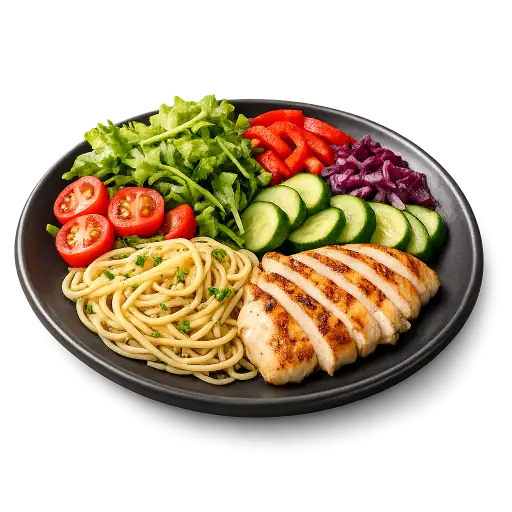

Ваш жизненный этап и ритм помогают точнее настроить велнес-рекомендации.
Помогает уловить ваш индивидуальный ритм и подобрать велнес-рекомендации точнее.
Отметьте сигналы тела, которые замечаете — это помогает понять, где нужна велнес-поддержка энергии и тонуса.
Вариабельность сердечного ритма
HRV показывает, насколько хорошо организм справляется со стрессом.
Отметьте приливы и ощущение жара за прошедшие сутки.
Качество сна
Сон — главное, что восстанавливает силы и настраивает ваши биоритмы.
Несколько завершающих штрихов.
Фокус и ясность напрямую зависят от сна, питания и уровня стресса.
Питание напрямую влияет на вашу энергию, сон и тонус.
Тип и интенсивность нагрузок влияют на энергию, тонус и восстановление.
Две короткие заметки: что нового в самочувствии и какие события были за неделю — так ИИ отличит настоящие изменения от бытовых причин.
Поможет собрать личную памятку ориентиров на день.
Баланс напряжения и восстановления влияет на сон, энергию и тонус.

- ½овощи и зелень
- ¼белок
- ¼медленные углеводы